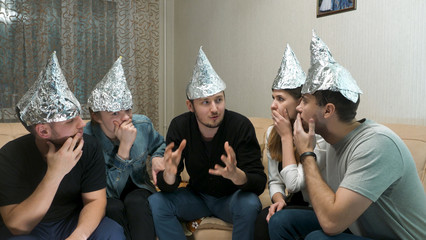

Introducción
El Proyecto MK Ultra fue un programa secreto de la CIA que exploraba técnicas de control mental, experimentación con drogas y modificación del comportamiento en las décadas de 1950 y 1960. Su objetivo era investigar y desarrollar métodos para el control de la mente y la manipulación psicológica.
Durante este proyecto, se llevaron a cabo numerosos experimentos controvertidos y éticamente cuestionables, incluido el uso de drogas como el LSD, la hipnosis y la privación sensorial en individuos sin su consentimiento informado.
Experimentos de MK Ultra
Los experimentos de MK Ultra abarcaron una amplia gama de técnicas destinadas a manipular la mente humana. Algunos de los métodos incluyeron la administración de drogas psicoactivas como el LSD, la hipnosis, la privación sensorial y la modificación del comportamiento.
Estos experimentos, realizados en secreto y muchas veces sin el consentimiento de los sujetos, generaron controversia y preocupación ética.
Consecuencias y Controversias
A medida que se hizo público, el Proyecto MK Ultra generó un intenso debate sobre la ética en la investigación científica. Las consecuencias éticas de manipular la mente humana sin consentimiento han sido motivo de preocupación y crítica.
Además, las revelaciones sobre MK Ultra llevaron a investigaciones y audiencias gubernamentales, y el programa ha sido objeto de controversia y críticas desde entonces.
Influencia en la Cultura Popular
El Proyecto MK Ultra ha dejado una marca indeleble en la cultura popular a lo largo de los años. Su representación en películas, series, libros y música ha despertado la imaginación del público y ha generado teorías de conspiración que vinculan sus experimentos con eventos contemporáneos.
Explora cómo las referencias al Proyecto MK Ultra han permeado diversas formas de entretenimiento y cómo estas representaciones han moldeado la percepción pública sobre el control mental y la manipulación psicológica.
Revelaciones y Documentación Desclasificada
Después del cierre del Proyecto MK Ultra, la desclasificación de documentos ha revelado información adicional sobre sus experimentos y el alcance de sus actividades.
Explora cómo la documentación desclasificada ha arrojado luz sobre aspectos antes desconocidos del proyecto, sus métodos de experimentación y las implicaciones éticas más profundas que rodearon sus actividades.